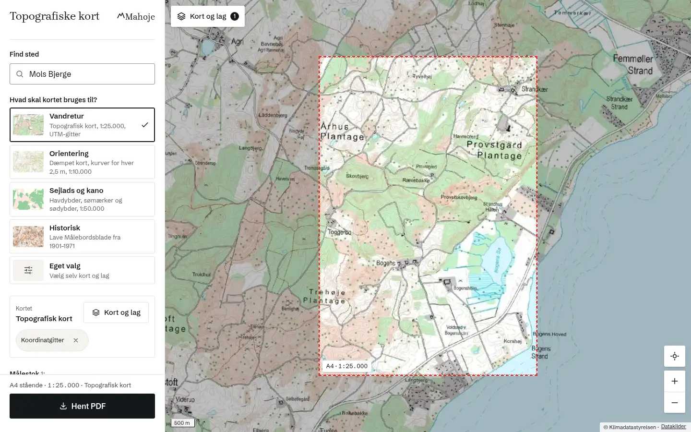
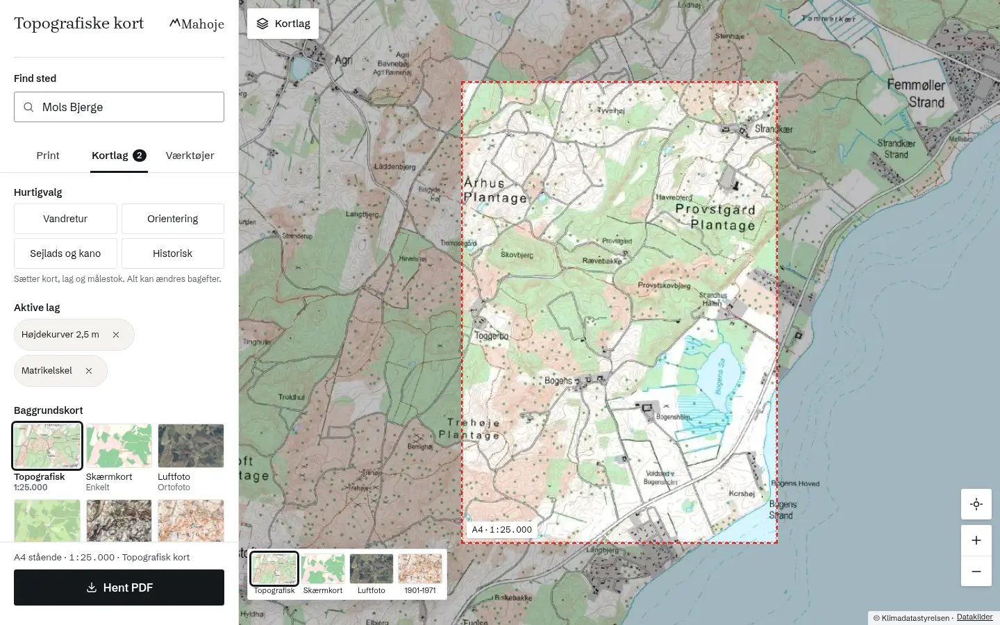
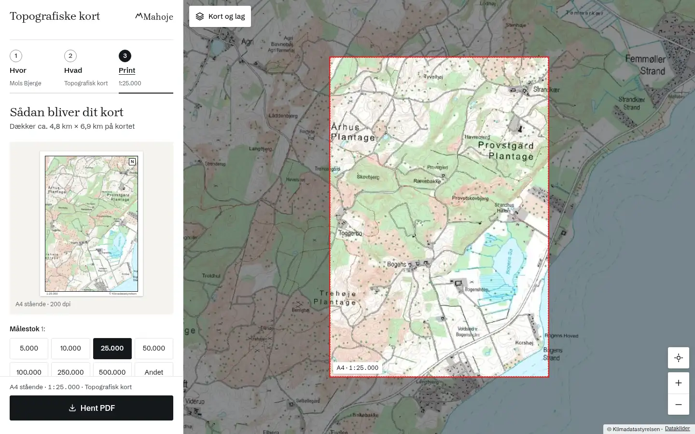

Kortlag og print: tre retninger
Klikbare prototyper til redesignet af kort.mahoje.dk og kort.solaris.dk. Kortet er et fast billede over Mols Bjerge, og der bliver ikke printet noget. Nederst på hver side kan du skifte mellem Mahoje og Solaris og mellem lyst og mørkt tema.

A: Start med formålet
Man vælger først, hvad kortet skal bruges til: vandretur, orientering, sejlads og kano eller historisk. Valget sætter kort, lag og målestok. Alt kan justeres bagefter i ét panel, "Kort og lag".

B: Ét samlet lagpanel
Sidepanelet får tre faner: Print, Kortlag og Værktøjer. Lagene ligger i foldbare grupper, og man kan søge i dem. Knappen på kortet åbner den samme fane, så der kun er ét sted til lag.

C: Hvor, hvad, print
Tre trin, som man kan hoppe frit imellem. Sidste trin viser en forhåndsvisning af det ark, der bliver printet. "Hent PDF" kan bruges fra alle trin.
Kortbilleder: © Klimadatastyrelsen (CC BY 4.0), © OpenStreetMap-bidragydere (ODbL), sømærker © OpenSeaMap, dybder EMODnet Bathymetry. Ikke til navigation. Se kort.mahoje.dk/kilder.